五、紫外可见分子吸收光谱 答案
一、选择题 ( 共85题 170分 )
1. 2 分 (1010) (3) 2. 2 分 (1019) (b) 3. 2 分 (1020) (4)
4. 2 分 (1021) (3) 5. 1 分 (1027) (3) 6. 2 分 (1074) (2)
7. 2 分 (1081) (2) 8. 2 分 (1082) (4) 9. 2 分 (1101) (4)
10. 2 分 (1105) (4) 11. 2 分 (1106) (2) 12. 2 分 (1173) (1)
13. 2 分 (1198) (1) 14. 2 分 (1217) (1) 15. 5 分 (1231) (4)
16. 2 分 (1232) (1) 17. 5 分 (1233) (4) 18. 2 分 (1245) (3)
19. 2 分 (1300) (4) 20. 2 分 (1301) (1) 21. 2 分 (1302) (4)
22. 1 分 (1303) (1) 23. 1 分 (1305) (2) 24. 1 分 (1306) (1)
25. 2 分 (1307) (4) 26. 2 分 (1308) (4) 27. 1 分 (1309) (1)
28. 2 分 (1324) (2) 29. 1 分 (1333) (4) 30. 2 分 (1334) (2)
31. 2 分 (1335) (1) 32. 2 分 (1336) (4) 33. 2 分 (1338) (3)
34. 2 分 (1339) (1) 35. 2 分 (1340) (4) 36. 2 分 (1341) (4)
37. 2 分 (1342) (1) 38. 2 分 (1343) (2) 39. 2 分 (1344) (4)
40. 2 分 (1346) (3) 41. 1 分 (1355) (3) 42. 2 分 (1357) (1)
43. 2 分 (1367) (3) 44. 1 分 (1371) (4) 45. 2 分 (1372) (3)
46. 1 分 (1374) (1) 47. 2 分 (1381) (3) 48. 1 分 (1752) (1)
49. 2 分 (1753) (3) 50. 2 分 (1754) (4) 51. 2 分 (1755) (3)
52. 2 分 (1756) (4) 53. 2 分 (1757) (2) 54. 1 分 (1758) (1)
55. 2 分 (1759) (2) 56. 2 分 (1760) (3) 57. 2 分 (1761) (4)
58. 2 分 (1762) (2) 59. 2 分 (1763) (2) 60. 2 分 (1764) (4)
61. 2 分 (1765) (3) 62. 2 分 (1766) (4) 63. 2 分 (1767) (3)
64. 2 分 (1768) (2) 65. 1 分 (1769) (3) 66. 2 分 (1770) (3)
67. 2 分 (1771) (2) 68. 2 分 (1772) (3) 69. 2 分 (1773) (4)
70. 1 分 (1774) (3) 71. 2 分 (1775) (2) 72. 2 分 (1776) (2)
73. 1 分 (1777) (2) 74. 2 分 (1778) (2) 75. 2 分 (1779) (3)
76. 2 分 (1780) (3) 77. 2 分 (1781) (2) 78. 1 分 (1782) (3)
79. 2 分 (1783) (3) 80. 2 分 (1784) (3) 81. 2 分 (1785) (1)
82. 2 分 (1786) (1) 83. 5 分 (1787) (2) 84. 5 分 (1788) (5)
85. 5 分 (1789) (3)
二、填空题 ( 共87题 )
1. 2 分 (2013)
[答] 紫外-可见光区；红外光区。
2. 2 分 (2015)
[答] 紫外光区；可见光区；红外光区。
3. 2 分 (2016)
[答] 可见光区；紫外光区；红外光区。
4. 5 分 (2024)
[答] 朗伯－比尔；光吸收定律；A = kcb 或 It= I010-εbc��
5. 5 分 (2028)
[答] 平行的单色光，均匀非散射的介质；负；浓度（或 c）。
6. 2 分 (2054)
200～800nm浓度测量的相对误差为最小。
7. 2 分 (2067)
[答] 2e2a×ca + 2e2b×cb
8. 2 分 (2076)
[答] 氢灯，钨灯
9. 5 分 (2310)
[答] 一些无机、有机物的定性分析；
单组分及混合物的定量分析；
化合物结构的测定；
配合物化学计量比的确定；
化学平衡的研究( 如平衡参数测量等 )。
10. 5 分 (2311)
[答] 能克服光谱重叠干扰；
消除吸收池的误差；
消除共存物吸收背景影响；
能直接进行混合物的测定。
11. 5 分 (2312)
[答] 分成两路,参比池,试样池
消除由光源强度漂移、电子线路不稳定的影响, 以及光学性能变化的误差
12. 5 分 (2313)
[答] 1.两个单色器
2.试样溶液在两个波长l1和l2的吸光度差值与待测浓度呈比例
13. 5 分 (2314)
[答] 1.混合物中所有吸收辐射的分子的吸光度具有加和性
2.朗伯-比尔定律
14. 5 分 (2315)
[答] 1.物质分子的电子吸收
2.在固定发射波长
3.在固定激发波长
15. 5 分 (2316)
[答] 1.A=ebc ( 或吸光度与浓度呈正比 )
2.If=2.303jfI0ebc ( 或荧光强度与浓度呈正比 )
16. 5 分 (2317)
[答] 1.增加( 或提高, 或增大 )
2.荧光强度与入射光强度呈正比
17. 5 分 (2318)
[答] 1.前面 2.后面 3.前面 4.侧面
18. 5 分 (2319)
[答] 1. s─>s*, 真空紫外; 2. n─>s*, 远紫外;
3. p─>p*, 紫外; 4. n─>p*, 近紫外, 可见.
19. 2 分 (2322)
[答] 1.紫外 2.红外 3.加和
20. 2 分 (2324)
[答] 1.单色光 2.棱镜 3.光栅 4.滤光片
21. 2 分 (2325)
[答] 1.吸收池 2.溶剂
22. 5 分 (2326)
[答] 1.吸光度 2.波长 3.不变 4.不同
23. 2 分 (2327)
[答] 1.表观吸光度( 吸光度差 )
2.浓度差
3.比试液浓度稍低的标准溶液
24. 2 分 (2328)
[答] 1.吸收光的程度 2.透过光的强度
25. 2 分 (2340)
[答] 1.- dI/I=Kdb 2.I/4 3.I/8
26. 2 分 (2341)
[答] 1.负 2.正 3.e B-=eHB
27. 5 分 (2342)
[答] 1.摩尔吸收系数
2.L/(mol・cm)
3.入射光波长
4.吸光物质性质
5.温度
28. 2 分 (2343)
[答] 1.小 2.大 3.浓度
29. 2 分 (2346)
[答] 1.准确度 2.灵敏度
30. 2 分 (2348)
[答] 等吸光点 吸收系数
31. 2 分 (2349)
[答] 呈正比 降低
32. 5 分 (2352)
[答] 垂直 入射光方向 散射
33. 2 分 (2353)
[答] A=－lgT[或A=－lg(I0/I)]
e=A／bc( 即b=1 cm, c=1 mol／L时的A值 )
T=I／I0
34. 2 分 (2354)
[答] ¨
－Ｎ－Ｃ＝Ｃ＜
┃
s→s*
n→p*
n→s*
p→p*
35. 2 分 (2355)
[答] s→s* n→s* n→p*
36. 2 分 (2621) 50％。
37. 2 分 (2623) 50％。
38. 2 分 (2624)
在最大吸收波长lmax处的摩尔吸收系数；
e＝A/(bc)(L・mol－1・cm－1)
39. 2 分 (2625)
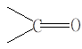
s→s *、n→p *、n→s *、p→p *
40. 2 分 (2626)
大； p→p *； 大。
41. 2 分 (2627) p→p*; 更大； 大。
42. 2 分 (2628) n→s *； n→s *； n→s *。
43. 2 分 (2629)
>C=O(或羰基)
n→p *；
n→s *；
p→p *。
44. 2 分 (2630)
s →s *、s →p *、p →p *、p →s *。
45. 2 分 (2631)
p→p*；
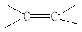
46. 5 分 (2632)
A＝－lgT＝ebc；
入射光是单色光；
吸收发生在均匀的介质中；
吸收过程中，吸收物质互相不发生作用。
47. 2 分 (2633)
体系中各组分间互相不发生作用时，吸光度具有加和性；
各组分吸光度之和；
A总＝e1bc1+e2bc2+……＋eibci
48. 2 分 (2634)
体系中各组分间互相不发生作用时，吸光度具有加和性；
各组分吸光度之和；
A总＝e1bc1+e2bc2+……＋eibci
49. 2 分 (2635)
e＝A/(bc)(L・mol－1・cm－1)
S=相对原子质量/e(mg・cm－2)
50. 2 分 (2636)
多色辐射（或入射光的非单色性）、狭缝宽度（或光谱带宽）； 杂散光。
51. 2 分 (2637)
解离反应、酸碱反应、配位反应、缔合反应。
52. 2 分 (2638)
0.2～0.8；
65%～15%；
其浓度的相对误差小。
53. 2 分 (2639)
π→π*、n→π*、n→s *。
54. 2 分 (2640)
C＝C－C－C－Br
55. 2 分 (2643)
含EBT的溶液（全试剂空白）。
56. 2 分 (2644)
含EBT的溶液（全试剂空白）。
57. 5 分 (2645)
波长、狭缝宽度、吸光度值 （有色物的形成）、溶液的pH 、显色剂用量、显色反应时间、温度、有色化合物的稳定性、掩蔽干扰。
58. 2 分 (2646)
摩尔吸收系数；
分别在极性和非极性溶剂中测吸收曲线比较。
59. 2 分 (2647)
电子由受激发单重态返回基态；
电子由受激发三重态返回基态。
60. 2 分 (2648)
干扰组分在l1及l2处有相同的吸光度；
被测组分在l1及l2处吸光度之差DA足够大。
61. 2 分 (2649) T3
62. 2 分 (2650) 蓝。
63. 2 分 (2651)
3.3×104L・mol－1・cm－1。
64. 2 分 (2652)
0.222； 0.111，0.333。
65. 2 分 (2653)
π→π*。
66. 2 分 (2654)
Eσ*>Eπ*>En>Eπ>Eσ。 n轨道以下，n→π*，π→π*
67. 2 分 (2655)
长； 大。
68. 2 分 (2656)
试样在l1及l2处吸光度之差DA。
69. 2 分 (2657)
发射的荧光波长比激发光辐射的波长长；
发射的荧光波长比激发光辐射的波长短。
70. 2 分 (2658)
较慢； 长； 还可以保持发射磷光一段时间。
71. 2 分 (2659)
小； 体系间窜跃 。
72. 2 分 (2660)
振动弛豫和内转换（或非辐射跃迁）；
最低振动能极。
73. 2 分 (2661)
几乎立即中止发射荧光；
持续发射磷光一段时间。
74. 2 分 (2662)
后者的光源与检测器方向互相垂直，后者有两个单色器。
75. 2 分 (2663)
最低振动、转动能极； 高； 长。
76. 2 分 (2664)
强； 刚性增强。
77. 2 分 (2665) 249
78. 5 分 (2666) 353
79. 5 分 (2667) 385
80. 2 分 (2668) 234
81. 2 分 (2669) 223
82. 2 分 (2670) 222
83. 2 分 (2671) 222
84. 2 分 (2672) 285
85. 2 分 (2959)
直跃线荧光 阶跃线荧光
86. 2 分 (4534)
[答] 应接触毛玻璃面
87. 2 分 (4535)
[答] 由于红外辐射能量远小于紫外辐射, 因此不会发生电子能级跃迁, 光谱精细
结构明显；而紫外辐射能量过高, 在发生电子能级跃迁的同时, 发生振动和
转动能级跃迁, 使谱带展宽, 精细结构消失.
三、计算题 ( 共66题 )
1. 10 分 (3065)
[答] 由于该酸的解离常数为 5.00×10-7，故 pH = 1 时，该酸完全不解离；pH=13时该酸完全解离。 pH = 7.00 时， HA 和 A- 同时存在。
c= 5.00×10-4mol/L
��e(ＨＡ) = 0.401/(5.00×10-4)= 802
��e (Ａ-) = 0.067/(5.00×10-4)= 134
[H+][A-] 10-7[A-]
K= ────── ; 5.00×10-7 = ─────
[HA] [HA]
[A-]
─── = 5.00
[HA]
[HA] = 5.00/6.00×10-4mol/L
[A-] = 25.00/6.00×10-4mol/L
5.00 25.00
A = 802×───×10-4+134×────×10-4 = 0.123
6.00 6.00
答：该酸溶液在 pH 7.00 时的吸光度为 0.123。
2. 10 分 (3066)
[答]称取 100 mg 试样时
100×10-3×0.08% 1000
c1= ──────────×──── = 1.36×10-5mol/L
58.70 100
A1 = 1.3×104×1.00×1.36×10-5 = 0.177
同理，称取 250 mg 试样时 A2= 0.177×2.5 = 0.443
称取 500 mg 试样时 A3= 0.177×5.0 = 0.886
由于在分光光度法中，吸光度在 0.434 附近时由透射比的读数误差引起的浓度测量的相对误差最小，故本题中选择称样 250 mg 时，结果的精密度最高。
3. 10 分 (3067)
[答] 根据 pH 7.00 和 7.50 时吸光度等于 0，说明 A- 在此波长无吸收。设a为每种 pH 值时 HA 的解离度，则有 HA → H+ + A-
c(1-a) [H+] ca
2.00 - 1.78 10-4.0 ×0.11
a1 = ─────── = 0.11 K1 = ──────── = 1.24×10-5
2.00 1 - 0.11
2.00 - 1.40 10-4.6×0.30
a2 = ─────── = 0.30 K2 = ─────── = 1.08×10-5
2.00 1 - 0.30
2.00 - 0.92 10-5.0×0.54
a3 = ─────── = 0.54 K3 = ─────── = 1.17×10-5
2.00 1 - 0.54
2.00 - 0.50 10-5.4×0.75
a4 = ─────── = 0.75 K4 = ─────── = 1.19×10-5
2.00 1 - 0.75
2.00 - 0.16 10-6.0×0.92
a5 = ─────── = 0.92 K5 = ──────── = 1.15×10-5
2.00 1 - 0.92
Ka = 1.17×10-5
4. 10 分 (3068)
[答]
[MR2] =0.540×2.30×10-4 = 1.80×10-4 mol/L
M + 2RMR2
[M2+] = 2.30×10-4- 1.80×10-4 = 0.50×10-4 mol/L
[R-] = 5.00×10-4- 2×1.80×10-4 = 1.40×10-4 mol/L
[MR2] 1.80×10-4
K = ────── = ────────────── = 1.84×108
[M2+][R-]2 0.50×10-4×(1.40×10-4)2
5. 10 分 (3069)
[答]
前一种情况下： (0.01 - [AB] )2
K = ─────────
[AB]
0.012 - 0.02[AB] + [AB]2 = 6×10-4 [AB]
[AB]2 - 0.0206 [AB] + 0.012 = 0
解得 [AB]1 = 0.0128 mol/L
[AB]2 = 0.00785 mol/L
所以溶液的吸光度为 0.785
后一种情况下：
[AB]2 - 0.01[AB] + (5×10-3)2 = 6×10-4[AB]
[AB]2 - 0.0106[AB] + (5×10-3)2 = 0
解得 [AB]1 = 7.05×10-3 mol/L
[AB]2 = 3.55×10-3 mol/L
所以溶液的吸光度为 2×0.355 = 0.710
6. 10 分 (3070)
[答]
1.71 - 1.00 2
P1 = ( ─────── ) = 0.06864 , P4 = P1
1.71 + 1.00
1.71 - 1.34 2
P2 = ( ─────── ) = 0.01472 , P3 = P2
1.71 + 1.34
总反射损失 = 1 - ( 1 - P1)( 1 - P2)( 1 - P3)( 1 - P4)
= 1 - ( 1 - P1)2( 1 - P2)2
= 1 - 0.93142×0.98532 = 15.8%
7. 10 分 (3071)
[答]
kf 2.0×108
jf = ───────── = ───────────────── = 8.8%
kf + kC + kx 2.0×108 + 8.0×107 + 2.0×109
kx kp 2.0×109 0.70
jL = ──────── × ────── = ────── × ───────
kf + kC + kx kp + kC＇ 22.8×108 0.70 + 0.20
= 68%
8. 10 分 (3073)
[答] (1) 用作图纸根据数据绘制吸收曲线时，求得吸光度与 pH 无关的波长值为 523 nm。用作图法粗略估计时，波长值为 525 nm 左右。
也可用内插法估计：
��l1 = 510 A1 = 0.353 A2 = 0.223
��l2 = 550 A’1= 0.119 A’2= 0.324
����Dl= 40 nm ��D A1 = 0.234 ��D A2 = 0.101
设所求波长为 (510 + ｘ)nm，则有 0.353 �C (0.234/40)��x = 0.223 + 0.101/40��x
x = 15.5 nm
所求波长为 525 nm
2)因 pKa= pH �C l([In-]/[HIn])
K = 5.20×10-6 , pKa = 5.28 pH = 5.22
所以 [In-] 0.871 1.000
─── = 0.871 [In-] = ─────c [HIn] = ───c
[HIn] 1.871 1.871
0.658 1.000c 0.076 0.871c
A= ───× ─── + ─── × ─── = 0.387
1.00c 1.871 1.00c 1.871
9. 10 分 (3074)
[答] 根据前两个吸光度数据可知该指示剂在 0.1 mol/L NaOH 中是完全解离的。因此 ��eIn-= 0.302×105
在 pH = 7 的 0.2mol/L NaClO4 溶液中
[In-] = 0.165/(0.302×105) = 0.546×10-5 mol/L
[HIn] = 1.00×10-5 - 0.546×10-5 = 0.454×10-5mol/L
[H+][In-] 10-7×0.546×10-5
Ka= ────── = ────────── = 1.20×10-7
[HIn] 0.454×10-5
10. 10 分 (3075)
[答]
(1) 未知液的吸光度 Ar = 1.000 - 0.699 = 0.301
(2) 用常规法测量时结果的相对误差：
Dc ±0.434DT ±0.434×0.005
── = ───── = ───────── = ±2.17% ≈ ±2.2%
c TlgT 0.1×(-1.000)
用示差法测量时结果的相对误差：
Dc ±0.434DT ±0.434×0.005
── = ──────── = ───────────── = ±0.434% ≈±0.43%
c Trlg(Tr × Ts) 0.500lg(0.5000×0.200)
Ts = 10-A = 10-699 = 0.200
Tr = 0.100/0.200 = 0.500
11. 10 分 (3076)
[答]��eHIn,528 = 1.738/(1.22×10-3 )= 1.425×103 = 1425
��eHIn,400 = 0.077/(1.22×10-3 )= 0.063×103 = 63
��eIn-,528 = 0
��eIn-,400 = 0.753/(1.09×10-3) = 0.691×103 = 691
1.401 = [HIn]×1425
0.166 = [HIn]×63 + [In-]×691
[HIn] = 1.401/1425 = 9.83×10-4mol/L
[In-] = 0.166 - 0.062 / 691 = 1.51×10-4 mol/L
pKa = pH - lg[In-]/[HIn] = 4.31 - lg1.51/9.83 = 5.12
Ka= 7.5×10-6
12. 10 分 (3077)
[答]配合物 MX3-的摩尔吸收系数e = 0.800/5.00×10-4 = 1.60×103
在后一种情况下配合物的平衡浓度 [MX3-] = 0.640/1.60×103= 4.00×10-4mol/L
根据方程式
M2+�� + 3X- MX3-��
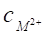
[MX3-] = 4.00×10-4 mol × L-1
[M2+] = 5.00 ×10-4 - 4.00×10-4 = 1.00×10-4mol/L
[X-] = 25.00×10-4 - 3×4.00×10-4 = 1.30×10-3mol/L
4.00×10-4
K= ───────────── = 1.82×109
1.00×10-4×(1.30×10-3)3
( 或 K(解离)= 1/K = 5.49×10-10)
13. 5 分 (3082)
[答]
200×10-6×20.0
c= ────────── = 8.0×10-3 g/L
100×5.0×10-3
8.0×10-3
c¢= ────── = 4.06×10-5 mol/L
197.0
A = -lg 0.50= 0.30
a = A/c = 0.30/(8.0×10-3) = 38 L/(g × cm)
e = A/c¢ = 0.30/(4.06×10-5) = 7.4×103 L/(mol × cm)
14. 10 分 (3089)
[答] (1) 强酸 A = e1bc , e1 = 19325
A =e2bc , e2 = 9075
强碱 A = e3bc , e3 = 1600
A = e4bc , e4 = 9075
pH 8.00 时 A = 0.314 = 19325[HIn] + 1600[In]
A = 0.363 = 9075 [HIn] + 9075[In]
解得 [In] = 2.59×10-5 mol/L , [HIn] = 1.41×10-5mol/L
(2) HIn = H+ + In- Ka=[H+][In-]/[HIn]
解得 pKa= 7.74
(3) 未知液 A = 0.322 = 19325[HIn] + 1600[In]
A = 0.420 = 9075 [HIn] + 9075[In]
解得 [In]= 3.23×10-5mol/L , [HIn] = 1.40×10-5mol/L
同 (2) 解得 pH = 8.10
15. 5 分 (3095)
[答] A1 = ebc1 A2 = ebc2
A2/A1 = c2/c1
c2 = (A2/A1)×c1 = (0.260/0.380)×0.0750 = 0.0513 mol/L
16. 5 分 (3096)
[答] A = ebc , 而 A = -lgT
��e= -lgT/bc = -lg0.50/(1.0×10-5×2 )
�� = 1.5×104
17. 10 分 (3098)
[答] 对 Ti A400 = K1c, K1= 0.369
A460 = K2ω, K2= 0.134
对 V A400 = K3ω, K3 = 0.057
A460 = K4ω, K4 = 0.091
解联立方程
A400 = 0.366 = 0.369ωTi + 0.057ωV
A460 = 0.430 = 0.134ωTi + 0.091ωV
ωTi = ( 0.366-0.057ωV )/0.369
则 0.366 - 0.057ωV
0.430 = 0.134 ( ─────────── ) + 0.091ωV
0.369
ωV = 4.24 mg/g = 0.424%
ωTi= 0.337 mg/g = 0.0337%
18. 5 分 (3100)
[答]由于 Ax= Kρx
A0= K(ρ0+ ρx)
Ax 20
得 ρx = ──── ρ0= ────×10 24g/mL = 2.5 mg/mL
A0- Ax 100-20
19. 5 分 (3102)
[答] 配合物的解离度 Amax - A 0.440 - 0.296
a = ───── = ──────── = 0.327
Amax 0.440
在 Amax = 0.440 处，相当于 Cu2+全部生成 CuSal-，其浓度：
c = 0.05625×50÷25 = 0.01125 ( mol/L )
Cu2+�� ＋ Sal3-�� ＝ CuSal- K’为条件稳定常数
ca ca c(1-a)
[CuSal-] c(1-a) 1 - 0.327
K’= ─────── = ───── = ──────── = 5.6×102
[Cu2+][Sal3-] ca × ca 0.01125×0.3272
K= K’× asal(H) = 5.6×102×5×106 = 2.8×109
当配合物很稳定时，解离度a小，即Amax 与A的差值很小。反之配合物很不
稳定，解离度甚大，作图得到的曲线则十分扁平。由于测量误差与作图误差无法得
到较准确的结果。
20. 5 分 (3121)
[答] A. 同环二烯母体基本值为 253 nm
加一个共轭双键 30
加三个环外双键 15
五个烷基同共轭体系相连 25
_____________________________________
323 nm
B. 同环共轭二烯母体基本值 253 nm
加一个共轭双键 30
八个烷基同共轭体系相连 40
____________________________________
323 nm
21. 10 分 (3122)
[答] (1) 13.3
(2) 7.0×104
(3) 2.51×10-5
(4) 0.708
(5) 1.03×104
(6) 36.6
22. 10 分 (3132)
[答]因为每一摩尔溶剂中紫外光子的能量E可以根据式
E = Nhc/l(Cm) 计算。
所以在环己烷溶液中
6.02×1023×6.63×10-34×3×1010
E = ───────────────── = 357 kJ/mol
335×10-7
同理：乙醇、甲醇和水中分别为 374 ,383和399 kJ/mol故在乙醇中氢键强度为374－357 = 17 kJ/mol，在水中氢键强度为 399－357 = 42 kJ/mol，在甲醇中氢键强度为 383－357 = 26 kJ/mol
23. 5 分 (3133)
[答]根据 WoodWard-Fieser 规则计算
母体基 215 nm
b- 取代 12
延长共轭双键 30
_______________________
257 nm
24. 5 分 (3134)
[答]根据 WoodWard─Fieser 规则计算
母体基 214 nm
环外双键×5 25
烷基取代×7 35
延长一个共轭双键 30
_______________________
304 nm
25. 5 分 (3144)
[答] (1) 弱酸 HA = H+ + A-
原始浓度 c(HA)= (44.60×0.1050)/25.00 = 0.1873
50.00×0.1873 - 44.60×0.1050
混合后 HA 的浓度 [HA] = ─────────────── = 0.04949mol/L
50.00 + 44.60
44.60×0.1050
混合后 A- 的浓度 [A-] = ─────── = 0.04950 mol/L
50.00 + 44.60
(2)根据题示
��l= 485 nm 时有 A1 = K1c , A2 = K2c
故 K1 = 0.454/(5.0×10-4) = 908 , K2 = 0.052/(5.0×10-4) = 104
��l= 625 nm 时有 A3 = K3c A4 = K4c
故K3 = 0.176/(5.0×10-4) = 352 , K4 = 0.823/(5.0×10-4) = 1646
(3) 这样一个混合溶液在不同波长处的吸光度是由 HIn 和 In- 提供的
在 ��l= 485 nm 时 , A5 = K1[HIn] + K2 [In-]
0.378 = 908[HIn] + 104 [In-] ①
在 ��l= 625 nm 时 , A6 = K3[HIn] + K4 [In-]
0.298 = 352[HIn] + 1646 [In-] ②
解①② 得 [In-] = 9.440×10-5 mol/L
[HIn] = 4.052×10-4 mol/L
(4)因 HIn = H++ In-
有 pK(HIn) = pH - lg([In-]/[HIn])
pH = -lg5.4×10-7+ lg[(9.440×10-5)/(4.052×10-4) ]= 5.63
同理 pKa= pH - lg[A]/[HA] = 5.63
Ka= 2.34×10-6
26. 5 分 (3301)
[答] －lg(I/I0)＝ebc
已知 b＝1.0cm, e＝1430
－lg(I/I0)＝－lg0.30＝0.52
∴ c＝－lg(I/I0)／eb＝0.52／(1430×1.0)＝3.6×10-4mol／Ｌ
故 93×3.6×10-4×100／1000＝0.0034（ｇ）
即制备100ｍＬ溶液需要0.0034ｇ苯胺
27. 5 分 (3305)
[答]A＝ebc
c＝A／be＝0.001／(10×2.12×105)＝4.72×10-10mol／L
106.4×4.72×10-10×10／1000＝5.02×10-10ｇ＝0.502ng
28. 10 分 (3306)
[答]c＝A／be
Ｍｎ的浓度~ＭｎO4―的浓度
m(Ｍｎ)=M(Ｍｎ)×c×250／1000＝M(Ｍｎ)A／4εb
w(Ｍｎ)＝m(Ｍｎ)／0.500
＝（54.94×0.393）／（0.500×4×2025×1.0）＝5.33×10-3
29. 10 分 (3307)
[答]设试样含铜质量分数为x, 则
A1＝ebc1＝eb[0.200x／M（Ｃｕ）]×1000／50.0
A2＝ebc2＝eb[（0.500×0.240％）／M（Ｃｕ）]×1000／50.0
两式相除得:
A1／A2＝0.200 x／（0.500×0.240％）
x＝0.260×0.500×0.240％／（0.600×0.200）＝0.260％
30. 10 分 (3308)
[答](1)a＝0.840／（0.0002×2）＝2.10×103L×ｇ-1×cm-1
(2)e＝2.10×103×150＝3.15×105L×mol-1×cm-1
(3)c＝A／eb
mx＝MxcV＝150×0.250／（3.15×105×1.0）×25.00≈0.00298mg
(4)0.00298／25.00＝2.98×10-6／25.00＝1.19×10-7g/mL
31. 5 分 (3310)
[答]A1－A2＝lgT2－lgT1＝0.500
A2－A3＝lgT3－lgT2＝0.250
lgT3－lgT1＝0.250＋0.500
lg（T3／T1）＝0.750
T3∶T1＝5.62
32. 5 分 (3311)
[答](1)A＝－lgT 0.699＝－lgT1 T1＝0.20
1.00＝－lgT2 T2＝0.10
0.20－0.10＝0.10
(2)T1由20％调为100％ 放大100／20＝5（倍）
(3)T2变为0.10×5＝0.50
即A＝－lg0.50＝0.301
33. 5 分 (3314)
[答]c＝－lgT／（eb）
c1＝-lg0.200／（12000×1.00）＝5.82×10-5（mol／Ｌ）
c2＝－lg0.650／（12000×1.00）＝1.56×10-5（mol／Ｌ）
故范围为: 1.56×10-5～5.82×10-5（mol／Ｌ）
34. 10 分 (3315)
[答](1)A＝－lgT＝－lg0.500＝0.301
(2)据比尔定律, c加倍, 则A加倍 即A＝0.602， T＝0.250
(3) e＝－lgT1／（bc）＝－lg0.500／（1.00×1.28×10-4）＝2.35×103
c＝－lgT2／（be）＝－lg0.750／（1.00×2.35×103）＝5.32×10-5(mol/L)
35. 10 分 (3318)
[答]cs＝（10.0／1）×10-3＝1.00×10-2ｇ／Ｌ
0.900＝a×1.00×cx
0.300＝a×0.100×1.00×10-2
解之: cx＝3.00×10-3ｇ／Ｌ＝3.00×10-3ｍｇ／ｍＬ
已知试样的 c＝500／500＝1.00ｍｇ／ｍＬ
所以（cx／c）＝（3.00×10-3／1.00）＝3.0×10-3
36. 5 分 (3319)
[答]A＝－lgT＝0.625 T＝0.237
Dc／c＝0.434×DT／（TlgT）
＝0.434×0.003／（0.237×lg0.237）
＝0.88％
37. 10 分 (3320)
[答]c：0.080／50＝1.6×10-3（ｇ／Ｌ）
1.6×10-3／207.2＝7.7×10-6（mol／Ｌ）
A＝－lgT＝－lg0.53＝0.28
a＝A／bc＝0.28／（2.0×1.6×10-3）＝88（Ｌ／ｇ×ｃｍ）
e＝A／bc＝0.28／（2.0×7.7×10-6）＝1.8×104（Ｌ／mol×cm）
38. 5 分 (3507)
ERIOX与M g2＋生成1：1的配合物，故
K生成＝[Mg－ERIOX]/{[Mg2＋][ERIOX]}
在化学计量点时[Mg-ERIOX]＝[ERIOX]＝5.0×10－7mol/L
因此， [Mg2＋]＝5.0×10 －7mol/ L
K生成＝5.0×10－7/( 5.0×10－7×5.0×10-7)＝2.0×106
39. 5 分 (3508)
0.20mg/mL＝2.0×10－4g/L，2.0×10－4g/L /106.4g/mol＝1.9×10－6mol/L
由比尔定律 A＝ebc
将b＝1.00cm，A＝0.390 代入得
0 .390＝ε×1.00×1.90×10－6
ε＝2.1×105L/(mol・cm)
40. 10 分 (3509)
解： A B
母体 215nm 215nm
同环共轭二烯 39nm 39nm
取代基a 10(1)nm 10(1)nm
b 12(1)nm 12(1)nm
g 18(1)nm
d 18(1)nm 18(1)nm
环外双键 15(3)nm
共轭延长 30nm 30nm
357nm 324nm
该化合物最可能的结构是A
41. 5 分 (3510)
解： 母体 215nm
取代基b 12(1)nm
d 18(1)nm
环外双键 5nm
共轭延长 30nm
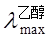
42. 5 分 (3511)
根据吸光度的加和性得:
在365nm处 0.724=3.53×103×1.00 ×cCo+3.23×103 ×1.00× cNi
在700nm处 0.071=4.29×102 ×1.00×cCo+0
解得 cCo=0.071/428.9=1.66×10-4mol/L
将cCo代入第一式得
cNi=(0.724-3530×1.66×10-4)/3230=4.32×10-5mol/L
43. 10 分 (3512)
15.00mL1.00mg/mL Fe(III)产生的吸光度=0.571-0.492=0.079
10.00mL试液中Fe的质量=15.00×1.00×(0.492/0.079)=93.42mg
两片试样中Fe的质量=93.42mg×(1000/10)=9.342mg
每片试样中Fe的质量=9.342mg/2=4.67mg=4.67×10-3g
则Fe的平均含量为Fe(mg/kg)=(9.34×10-3)/(6.08×10-3)=1.54g/kg
44. 5 分 (3513)
解：A＝－log(I/I0) ＝ebc
ε＝10000L/(mol・cm)，b＝1.0cm，A＝0.30
c＝A/eb＝0.30/(10000×1.0）＝3.0×10－5 mol/L
Mr(C6H8O)＝96
2－环己烯酮的质量/1L溶液＝96g/mol×3.0×10－5mol/L=2.9×10－3 g/L
45. 10 分 (3514)
解：由题意，可用吸光度0 690的溶液计算配离子的摩尔吸收系数ε
ε＝A/bC＝0.690/(1.00×2.30×10－4）＝3.00×103L・mol－1・cm－1
用吸光度0.540的溶液计算平衡时ZnL22－、Zn2＋和L2－的浓度。由于Zn2＋和L2－
在480nm无吸收，那么
[ZnL22－]＝A/eb＝0.540/(3.00×103×1.00）＝1.80×10－4 mol/L
因c(Zn2＋）＝[Zn2＋]＋[ZnL22－]
故 [Zn2＋]＝2.30×10－4－1.80×10－4＝5.00×10－5 mol/L
c（L2－）＝[L2－]＋2[ ZnL22－]
则 L2－＝5.00×10－4－2×1.80×10－4＝1.40×10－4 mol/L
K＝[ZnL22－]/([Zn2＋][ L2－]2)＝1.80×10－4/{5.00×10－5×(1.40×10－4)2}＝1.84×108
46. 10 分 (3515)
解：由吸光度的加和性得
在470nm处 0.424＝4170×1.00×c(T)＋2290×1.00×c(D)
在428nm处 0.401＝3540×1.00×c(T)＋2730×1.00×c(D)
联立两式解得T和D的浓度
[T]＝7.30×10－5 mol/L
[D]＝5.22×10－5mol/L
铁在输铁蛋白中的质量分数
w(Fe)＝2[T]/(2[T]＋[D]）
＝2×7.30×10－5 /（2×7.30×10－5＋5.22×10－5）=0.737
铁在脱铁草氨酸中的质量分数
w(Fe)＝[D]/(2[T]＋[D])＝0.263
47. 10 分 (3516)
解：HIn＝H＋＋In－ 故 [H＋]＝[In－]
所以 [In-]＋[HIn]＝2.00×10－5 mol/L
代入Ka则 [In-]2 /{2.00×10－5－[In－]}＝1.42×10－5
整理 [In－]2＋（1.42×10－5）[In－]－2.84×10－10＝0
解得 [In－]＝1.12 ×10－5mol/L
[HIn]＝2.00×10－5－1.12×10－5＝0.88×10－5mol/L
A430＝6.30×102×1.00×0.88×10－5＋2.06×104×1.00×1.12×10－5
＝0.236
同理 A570＝0.073
48. 10 分 (3517)
解：当A＝1.00时，lgT＝－A＝－1.00，T＝0.100
DC/C＝0.434/lgT×(DT/T)
对该仪器 DT＝+0.003 将 DT及T代入上式得
DC/C＝0.434/lg0.100×(+0.003/0.1000)＝+0.013 或+1.3％
当A＝2.000时，T＝10－2＝0.010
DC/C =0.434/lg0.010×（+0.003/0.010）＝+0.065 或+6.5％
49. 10 分 (3518)
解：令c(Pd)和c(Au)表示Pd和Au离子的物质的量浓度
根据吸光度的加合性在480nm处有：
0.533＝3.55×103×1.00×c(Pd)＋2.96×103×1.00×c(Au)
c(Pd)＝（0.533－2.96×103×c(Au)）/3.55×103
同理在635nm处有0.590＝5.64×102×1.00×c(Pd)＋1.45×104×1.00×c(Au)
将c(Pd)代入上式得
0.590＝5.64×102×（0.533－2.96×103×c(Au)）/（3.55×103）
＋1.45×104×c(Au)
＝0.0847－4.70×102×c(Au)＋1.45×104×c(Au)
c(Au)＝（0.590－0.0847）/（1.403×104）＝3.60×10－5 mol/L
c(Pd)＝（0.533－2.96×103×3.60×10－5）/ (3.55×103）＝1.20×10－4 mol/L
由于冲稀一倍，故试样中Pd(Ⅱ)和Au(Ⅱ)的浓度分别为7.20×10－5 mol/L
及2.40×10－4 mol/L
50. 5 分 (3519)
解：加入1.00mL后使溶液稀释，校正该稀释作用得
（1）校正吸光度＝0.517×（25.0＋1.00）/25.0＝0.538
（2）0.0500mg磷酸盐产生的吸光度＝0.538－0.428＝0.110
（3）溶液中（25.0/100）磷酸盐量＝0.428/0.110×0.0500＝0.195mg
（4）尿样中磷酸盐的含量(mg/mL)＝100/25.0×0.195/2.00＝0.390
51. 5 分 (3520)
解：由公式A＝b[e(Co)c(Co)+e(Ni)c(Ni)]得
0.467＝1.00×[36400×c(Co)＋5520×c(Ni)]－－－－－－－－－－－（1）
0.347＝1.00×[1240×c(Co) ＋17500×c(Ni)]－－－－－－－－－－－（2）
由（1） c(Ni)＝[0.467－36400×c(Co)]/5520 －－－－－－－－－－（3）
（3）代入（2） 0.347＝1240 c(Co) ＋17500×[0.467－36400×c(Co)]/5520
c(Co)＝9.93×10－5 mol・L-1 －－－－－－－－－－－－－－（4）
（4）代入（3）
c(Ni)＝（0.467－36400×1.25×10－5）/5520＝1.89×10－5 mol・L-1
所以
ω(Co)＝c(Co)×50×（50/25）×10－3×Mr(Co) /0.376×100％＝1.56％
ω(Ni)＝c(Ni) ×50×（50/25）×10－3×Mr(Ni)/0.376×100％＝2.95％
52. 5 分 (3521)
解：（a）A＝ebc＝9.3×103×0.500×5.0×10－5＝0.232
（b）T＝10－A＝10－0.232＝0.585 （58.5％）
（c）c1＝A1 /eb＝0.100/ (9.3×103×1.00）＝1.08×10－5 mol/L
c2＝A2/eb＝1.500/(9.3×103×1.00)＝1.62×10－4 mol/L
53. 10 分 (3522)
解：（1）因为 25.0mL稀释液中加入1.0mL标液后总体积为26.0mL，故应换算或25.0mL中存1.0mL 的标样的吸光度
0.517/x＝（ρx Vx /26）/（ρx Vx /25）＝25/26
解出得 x＝0.538
（2）试样液中加入的P的吸光度 0.538－0.428＝0.111
所以 ρ＝0.428×0.050/0.111＝0.195mg/mL
（3）尿样中P的质量浓度
（100 /25.0）×0.195/5.0＝0.156mg/mL ＝156mg/L
54. 5 分 (3523)
Au的浓度：
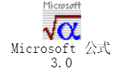


55. 10 分 (3526)
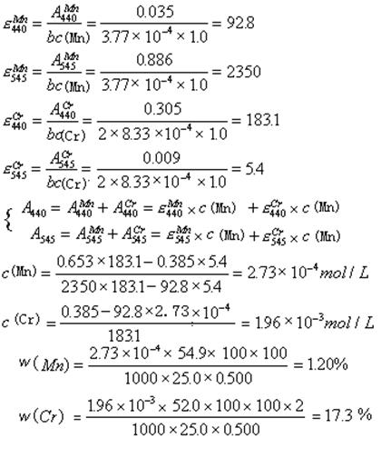


56. 5 分 (3527)
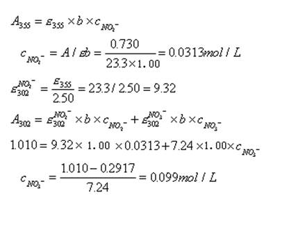
57. 5 分 (3528)
a的母体值 215nm b的母体值 215nm
一个β 取代 ＋12nm 二个β 取代基 ＋2×12nm
计算lmax ≈ 227nm 一个α 取代基 ＋10nm
一个环外双键 ＋ 5nm
计算lmax 254nm
所以α－莎草酮应属b 结构
58. 5 分 (3529)
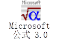
59. 5 分 (3530)
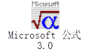
可取pH＝7.0 测定值为A，AA-取pH＝9.0的测定值，AHA取pH=4.0的测定值。
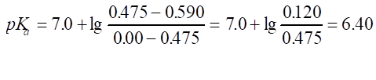
60. 5 分 (3531)
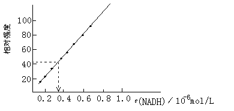
由校准曲线找出未知液中NADH的浓度大致为0.34×10－6 mol/L
61. 2 分 (3532)
A＝－lgT＝2－ lg75＝0.125
c＝A/(bε)＝0.125/(10×12.39)＝1.0×10－3 mol/L
62. 5 分 (3533)
A=kbc 设水样中含Fe3+量为xmg/mL
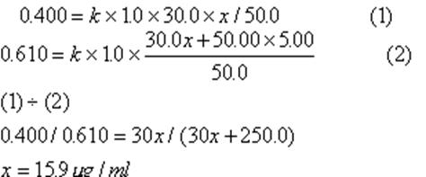
另：标准加入法（有定容）：
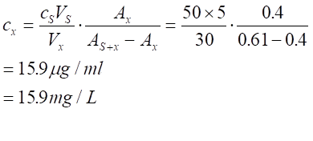
63. 5 分 (3534)
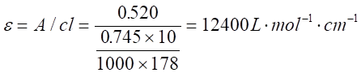
（只写ε值无单位只给3分，只有全部正确才得5分）
64. 5 分 (3535)
（A）芳酮母体 246nm
邻位烷基 ＋ 3nm
间位氯 ＋ 0nm
邻位羟基 ＋ 7nm
计算值(lmax) 256nm
（B）芳酮母体 246nm
对甲氧基增量 ＋ 25nm
邻烷基增量 ＋ 3nm
计算值(lmax) 274nm
65. 10 分 (3664)
（1）以c(R)为横坐标，A为纵坐标，作图可得配合物c(R)＝7.5×10－5 mol/L时配合物
的配位比为7.5×10－5/ 2.5×10－5＝3，此配合物为CoR32＋
（2）Co(Ⅱ) ＋3R → CoR32＋
考虑到配合物的解离度α ，由图可得
a ＝（A’－A ）/A’ A’ ＝0.529 A＝0.486
a ＝0.0813
K稳＝[CoR32＋] / [Co2＋][R]3
[CoR32+]＝(1-a )×c
[Co2+ ]＝a ×c
[R]＝ a ×3c
K稳=(1-a )/{33×a4×c3}
将有关数据代入此式得
K稳=(1-0.0813)/{33×0.08134×(2.5×10-5)3}
=4.98×1016
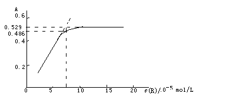
66. 5 分 (4518)
[答] 由于红外辐射能量远小于紫外辐射, 因此不会发生电子能级跃迁, 光谱精细
结构明显；而紫外辐射能量过高, 在发生电子能级跃迁的同时, 发生振动和
转动能级跃迁, 使谱带展宽, 精细结构消失.
四、问答题 ( 共 41题 )
1. 10 分 (2320)
[答] 1.溶液折射指数增加;
2.仪器因素, 多色辐射, 狭缝宽度, 杂散光;
3.化学因素, 溶剂作用, 温度影响, 光效应.
2. 10 分 (2320)
[答] 1.溶液折射指数增加;
2.仪器因素, 多色辐射, 狭缝宽度, 杂散光;
3.化学因素, 溶剂作用, 温度影响, 光效应.
3. 5 分 (4004)
[答] 测定波长对吸光光度分析的灵敏度、精密度和选择性皆有影响，正确选择测定波
长可以达到“吸收最大，干扰最小”的目的，提高测定的准确性。在本实验条件下，
无干扰元素共存，原则上应选用 A― l 曲线中吸光度最大处的波长进行测定。但图
中 a 处， 在很窄的波长范围内 A 随入的变化改变很大， 工作条件难于控制准
确一致，将影响测定结果的精密度和准确度。采用 b 处波长进行测定，易于控制工作
条件，减小测量误差。
4. 10 分 (4006)
[答] (1) 该配合物在 410 nm 处有强吸收，吸收波长在蓝紫色区，因而应该选用蓝色
滤光片。（或者：该配合物在 410 nm处有强吸收，说明此合物呈黄色，故应选其
互补色即蓝色的滤光片）。
(2) A = ebc = 800×1.00×[(1.000×5.5%×1000)/(250×47.8×100)]× X
= 0.0368X
其中 X 表示所移取的整份溶液的体积(cm3)。
当取 5.00 mL 时， A1= 0.0368 × 5.00 = 0.184
当取 10.00 mL 时， A2= 0.0368 × 10.00 = 0.368
当取 25.00 mL 时， A3= 0.0368 × 25.00 = 0.92
因为当吸光度值在 0.2~0.7 之间时，比色测量的精密度较好，故应选用 10.00 mL.
(3) (a) 当用抗坏血酸或盐酸羟胺作还原剂时，会与溶液中的 H2O2作用，妨
碍发色。
(b) NaF 会破坏生成的配合物 [TiO(H2O2)]2+ 。
(c) 用不加 H2O2的溶液作参比恰好能消除 Fe2(SO4)3的黄颜色及其它 空白吸收。
因而是最佳的选择。
5. 10 分 (4011)
[答] 首先区分同环二烯 ( 1,3,4,5 ) 和异环二烯 ( 2,6 ) ；
再计算取代基和环外双键数目：
(1) 4 个取代基，2 个环外双键 总计数 6
(2) 5 个取代基，3 个环外双键 总计数 8
(3) 8 个取代基 总计数 8
(4) 6 个取代基 总计数 6
(5) 5 个取代基，3 个环外双键 总计数 8
(6) 7 个取代基，5 个环外双键 总计数 12
在同环二烯中排列次序为 l3= l5＞ l1= l4
在异环二烯中排列次序为 l6> l2
具体计算值：l3= l5= 323 nm l1= l4= 313 nm
6. 10 分 (4012)
[答] (Ⅰ) 只含一个双键，吸收波长最短。
(Ⅲ) (Ⅳ) 都是异环共轭双键，吸收波长较 (Ⅰ) 长，较 (Ⅱ) 短。其中 (Ⅳ)
有 4 个取代基和 2 个环外双键； (Ⅲ) 只有三个取代基和一个环外双键，因此
�鼽�lⅢ<lⅣ�鼽�
(Ⅱ) 是同环共轭双键，吸收波长最长。
吸收波长 ��lⅠ< lⅢ < lⅣ < lⅡ��
根据它们紫外吸收光谱的吸收峰波长可区分为这四种化合物。
7. 5 分 (4015)
[答] ��l= 2nt/m ，今 t = 520 nm； n = 1.400
m = 1 时， l1= 1456 nm
m = 2 时， l2= 728 nm
m = 3 时， l3= 485 nm
m = 4 时， l4= 364 nm
m = 5 时， l5= 291 nm
m = 6 时， l6= 243 nm
m = 7 时， l7= 208 nm
m = 8 时， l8= 18.2 nm
l2- l7 共六种波长为该滤光片在紫外 - 可见区中可以通过的波长。
8. 5 分 (4028)
[答]：如图：
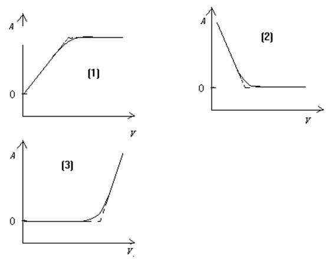
9. 5 分 (4029)
[答]由于化合物Ⅰ的共轭系统较化合物Ⅱ 为长，则Ⅰ的吸收带较 Ⅱ 出现在长波
方向，所以化合物 Ⅰ 为 b - 异构体，化合物 Ⅱ 为 a - 异构体。
10. 5 分 (4030)
[答] 第一种方法：分别在极性和非极性溶剂中测定试样的 UV 吸收光谱。设在非极性
和极性溶剂中测得的最大吸收波长分别为 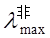 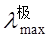
若 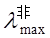 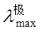
若 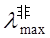 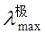
第二种方法：测定该吸收带的摩尔吸收系数 ��max
若 emax > 103L/(mol・cm) 时，该吸收带为 p → p*跃迁产生。
若 emax < 102 L/(mol・cm) 时，该吸收带为 n → p*跃迁产生。
11. 5 分 (4040)
[答] 主要区别是：磷光寿命长（10-4 - n 秒），荧光寿命短（10-7-10-9 秒）。因为荧光是由第一激发态的最低振动能级跃至基态中各振动能极（单重态跃迁至单重态）；磷光是由最低三重态跃至基态中各振动能级（三重态跃迁至单重态），所以寿命不同。
12. 5 分 (4054)
[答] 1. 斩波器 区别荧光和磷光
2. 低温试样池 磷光多在低温下测量
( 液氮 )
13. 5 分 (4058)
[答] c/(mol・L-1) I0 I A A/c
0.00 98.0 98.0 0 0
1.00 97.0 77.2 0.099 0.099
3.00 99.5 50.0 0.299 0.100
5.00 100.0 33.5 0.475 0.095
7.00 99.0 23.4 0.626 0.089
9.00 100.0 18.1 0.742 0.082
该溶液显然不服从比尔定律。
14. 5 分 (4063)
[答] 如图： 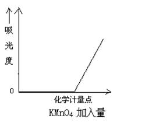
15. 5 分 (4064)
[答] 1. 光源 发出所需波长范围内的连续光谱
5. 棱镜 使入射光色散得单色光
9. 吸收池 盛放欲测吸光度之溶液
11. 硒光电池 将光强转换成电流进行测量
16. 5 分 (4065)
[答]如图： 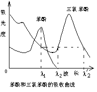
17. 5 分 (4066)
[答] 如图
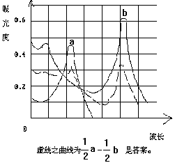
18. 5 分 (4067)
[答] A: et >ep>0 ,ex=0
B: et >0, ex =0 , ep=0 ;
C: ep >0, et=0 , ex=0 ;
D: ex >0, et=0 , ep=0 ;
E: ex > et>0 , ep=0 ;
F: e p > et>0 , ex=0 ;
G: e p > ex >0,et=0
19. 5 分 (4123)
[答]
┏━━━┓
┃参 比 ┃
┗━━━┛ 或读数指示器
┏━━┓ ┏━━━┓ ┏━━┓ ┏━━━┓ ┏━━━┓
┃光源┃→┃单色器┃→┃试样┃→┃检测器┃→┃记录器┃
┗━━┛ ┗━━━┛ ┗━━┛ ┗━━━┛ ┗━━━┛
作用：
光源：较宽的区域内提供紫外连续电磁辐射。
单色器：能把电磁辐射分离出不同波长的成分。
试样池：放待测物溶液
参比池：放参比溶液
检测器：检测光信号（将光信号变成电信号进行检测）
记录器：记录并显示成一定的读数。
20. 5 分 (4138)
[答] (1), (2)用于红外光谱分析, (3)用于可见范围分析。
21. 5 分 (4150)
[答] 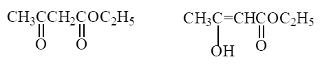
酮式 烯醇式
它没有共轭双键 它有共轭双键
故仅在末端 204 nm 故在 245 nm 处
处有一弱吸收 有强的 K 吸收带
据此可知该实验室的一瓶乙酰乙酸乙酯为酮式结构。
22. 5 分 (4305)
[答] lmax比219nm大。因为己醇比己烷的极性更大, 而大多数p→p*跃迁中, 激发态比基态有更大的极性,因此在已醇中p*态比p态( 基态 )更稳定, 从而p→p*跃迁吸收将向长波方向移动。
23. 5 分 (4306)
[答]观察到的吸收谱带是p→p*类型跃迁. 化合物B 具有lmax＝303nm。较长的共轭系统吸收较长波长的光。
24. 5 分 (4307)
[答]可能的跃迁类型有s→s*,s→p*,p→p*,p→s*。
25. 5 分 (4309)
[答]选l2使B 组分在l2的吸光度和其在l1处的吸光度相等。
26. 5 分 (4310)
[答]紫外及可见分光光度计的单色器是将光源发出的连续辐射色散为单色光, 然后经狭缝进入试样池。
原子吸收分光光度计的光源是半宽度很窄的锐线光源, 其单色器的作用主要是将要测量的共振线与干扰谱线分开。
27. 5 分 (4312)
[答]508nm属于在可见光区测量, 选721型较好。721型为玻璃棱镜, 751型为石英棱镜。玻璃棱镜在可见光区色散率比石英棱镜大, 故选721型为好。
28. 5 分 (4314)
[答]荧光强度与入射光强呈正比, 采用强光源可提高荧光测定的灵敏度; 又由于是 在与入射光垂直的方向测量荧光强度, 无入射光的背景干扰, 即使很弱的荧光也可测量。
29. 5 分 (4316)
[答]溶液1 为苯酚, 溶液2 为苯。因为─ＯＨ为助色团, 它与苯环形成p─p共轭, 使吸收波长红移, 所以苯酚的吸收波长比苯要长。
30. 5 分 (4379)
[答](1)物质的吸收光谱是物质吸收光能后,由基态跃迁至较高激发态的各个振动能级，产生吸收光谱的形状是由激发态的能级分布决定的。(2)分子荧光光谱是由激发态的最低振动能级决定的。两者情况相似,但又不相同,再加上物质分子在激发态和基态受溶剂作用及环境的影响不同,因此一般仅较长的吸收波长带与较短的荧光波长带会重叠(即吸收和辐射的"0-0"跃迁)。
31. 10 分 (4380)
[答]当辐射由l和l'组成的光照射试样时在l处有lg(I0／I)＝ebc,即I0／I＝10ebc��,在l'处有I0'／I '＝10e¢bc;总的吸光度为A＝lg[(I0＋I0')／(I+I')]将I和I'代入上式得:
A＝lg{(I0＋I0')／[I0(-ebc(exp(ln10)))＋I0'(-e'bc(exp(ln10)))]}
由该式可得到三种情况, 即
(1)当e＝e'时, 上式符合朗伯-比尔定律, 但这种情况极特殊
(2)当e＞e'时, 测得的吸光度A值要比波长l处的真正"单色的"吸光度值为低, 结果引起负偏离;
(3)当e＜e'时, 测得的吸光度A值要比波长l处的真正"单色的"吸光度值为低, 结果引起负偏离;
同时可以看出e和e'相差越大,偏离线性关系越大,因此入射光的非单色会给结果带来一定误差.
32. 5 分 (4381)
[答]n─→p* lmax =230nm，p─→p* lmax =190nm，由于n─→p*跃迁的能量比p─→p*跃迁能量低, 故吸收发生在波长较长的吸收带, 而p─→p*跃迁的吸收强度总是大于n─→p*吸收强度的10到100倍, 故p─→p*跃迁对应图中波长较短, 吸收强度大的谱带.
33. 5 分 (4438)
[答] CH3CH=CHCH=CHNH2 > CH2=CHCH2CH=CHNH2 > CH3CH2CH2CH2CH2NH2
34. 5 分 (4439)
[答] 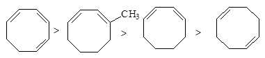
35. 2 分 (4440)
[答] 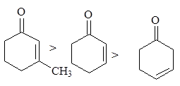
36. 5 分 (4441)
[答] 吸收较大的峰为C=C的��p─→p*跃迁, 较小的吸收峰为C=O的n─→p*跃迁.
215nm + 10nm + 12nm =237nm(C=C-C=O) (a-取代) (b-取代)计算结果谱图吻合.
37. 10 分 (4608)
(1) l 490时, A=0.36, l560时, A=0.42
(2) 由图中查得, 在520nm和550nm处KMnO4的A=0.74
ε=A/bc=0.74/(1.00×3.0×10－4)=2.5×103L・mol-1・cm-1
(3) 当KMnO4浓度改变时, 吸收曲线无变化, 其最大吸收波长lmax仍为520nm和
550nm, 但对应的吸光度值A有变化, 浓度增大, A值增大, 浓度减小, A值减小。
(4) 应选l550为好, 此时K2Cr2O7无干扰。
(5) (Ⅰ)先在l550 处求出cKMnO4, 再在l350 处求出A350(先由纯KMnO4和K2Cr2O7分
别求出它们的ε值), 则A350=A350(Cr) +A350(Mn) A350(Cr)=A350-A350(Mn),
而A350(Cr)=ε350(Mn)×c(KMnO4), Cr的浓度c=A35Cr0/[ε350(Cr)×b]
(Ⅱ)找出等吸光点, 由l550处可知KMnO4浓度, 由此求出等吸光点处的ε, 再得
K2Cr2O7的浓度。
(Ⅲ) 用双波长分光光度法, 由图中找出l1及l2(在l1与l2 处KMnO4有相同的A
值) DA=Al1 －Al2, 可得K2Cr2O7的浓度。
38. 5 分 (4610)
用示差分光光度法, 选择一个与被测试液组分一致, 浓度稍低的溶液为参比, 用其调零
点或T=100%, 然后进行试样中常量组分的测定, 设参比液浓度cs, 试液浓度cx , cx > cs ,
As=e csb , Ax=e cxb, DA=Ax -As =eDcb , 由此可知, 测得吸光度是被测试液与参比液吸光度的差值. 由于用cs调T=100%, 放大了读数标尺, 从而提高了测量准确度。
39. 5 分 (4611)
用示差分光光度法, 选择一个与被测试液组分一致, 浓度稍低的溶液为参比, 用其调零
点或T=100%, 然后进行试样中常量组分的测定, 设参比液浓度cs, 试液浓度cx , cx > cs ,
As=e csb , Ax=e cxb, DA=Ax -As =eDcb , 由此可知, 测得吸光度是被测试液与参比液吸光度的差值. 由于用cs调T=100%, 放大了读数标尺, 从而提高了测量准确度。
40. 5 分 (4612)
(1) 荧光激发光谱: 固定荧光发射波长, 扫描荧光激发波长, 所得到的激发波长与荧光
强度的一维光谱曲线。
荧光发射光谱: 固定荧光激发波长, 扫描荧光发射波长, 所得到的发射波长与荧光强度的一维光谱曲线。
(2) 荧光发射光谱是供应能量使试样增加能量后，针对发射的荧光所记录的光谱, 荧光激
发光谱是以荧光为光源照射试样后, 针对试样吸收能量所记录的光谱。 荧光激发光
谱与吸收光谱相近。
41. 5 分 (4613)
两者结构很相似, 但A没有荧光, B有很强荧光. 这是因为B结构中的氧桥使此分子成为具有刚性平面结构的分子. 这种刚性结构使分子的振动减弱, 因而减小了体系间跨越到 三重态的可能性, 以及碰撞去活化的可能性。